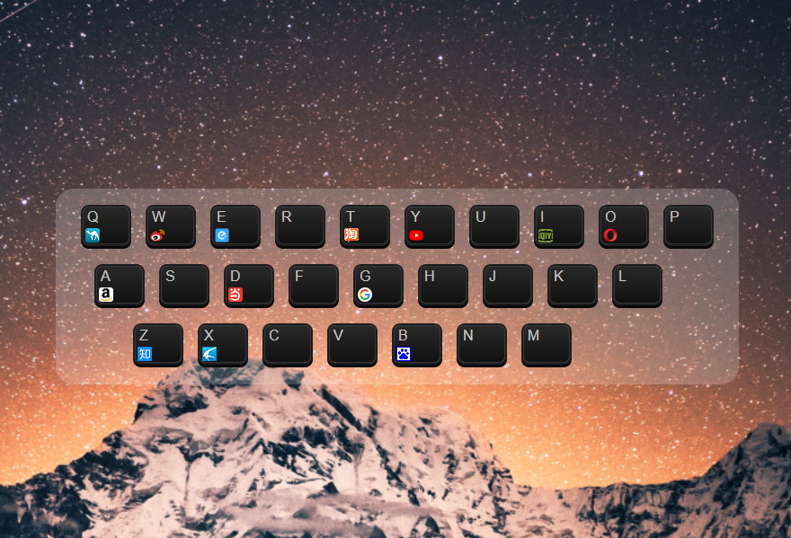
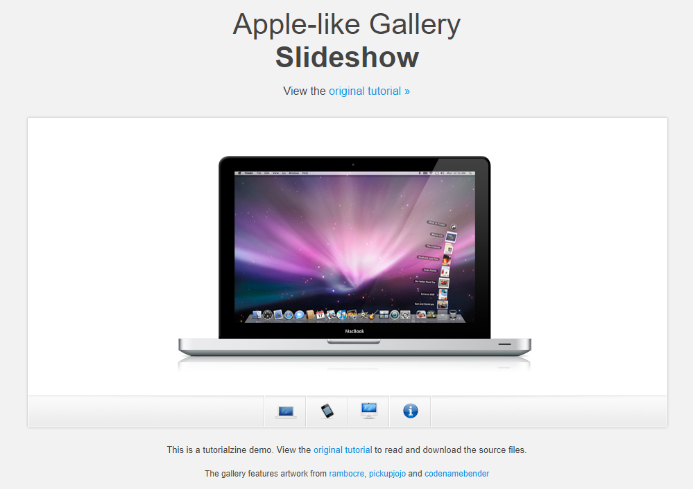

RS
card
关于
技能
作品
作品1
作品2
作品3
博客
博客1
博客2
博客3
日历
联系方式
其他
Hello
陈 光 展
前端开发工程师
年龄
18
所在城市
深圳
邮箱
764146802@qq.com
手机
15361584160
下载PDF简历
陈光展，毕业于广州大学，土木工程
目前在深圳建筑公司上班
技能
HTML 5 & CSS 3
JavaScript
jQuery
Vue.js
React.js
Node.js
作品集
 